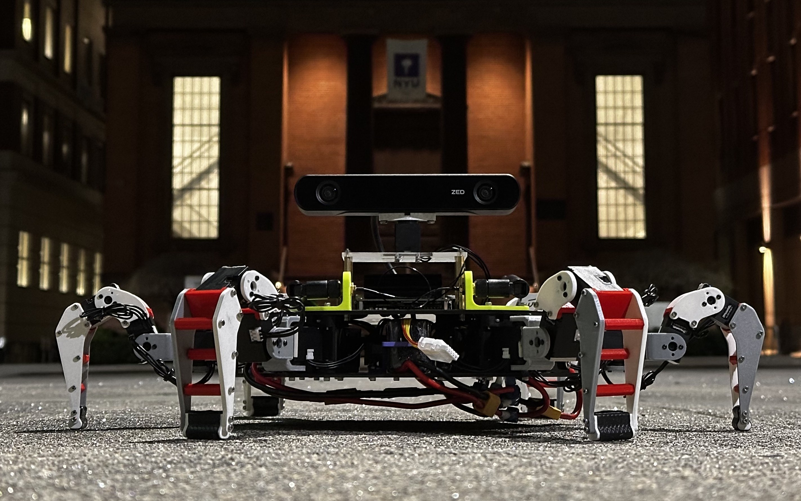

Hexy: The Hexapod
"A modular hexapod-quadruped hybrid robot for stable, adaptive, autonomous movement and mapping"
Hexy is a six-legged robot that has been designed to confidently explore tricky terrain. While traditional wheeled robots may become stuck and bipedal ones may be unstable, Hexy’s hexapod structure provides the balance and control needed to move smoothly across everything from rocky ground to city rubble and even potential use on other planets.
Developed as part of a graduate research project at NYU, Hexy has been built for intelligent movement. Model Predictive Control (MPC) is used to plan steps in real time, while camera and IMU data are fused to estimate location and motion. With Visual SLAM, the surrounding environment is mapped during navigation, and autonomous obstacle avoidance enables the robot to adapt its path in response to unexpected barriers.
Whether industrial sites are being inspected or distant terrains are being explored, Hexy has been designed to go where other robots cannot.
Advantages of Hexapod over other designs are shown in the table below:
| Category | Hexy (Hexapod) | Drone (Quadrotor) | Quadruped | Biped |
|---|---|---|---|---|
| Stability | High static stability with tripod gait | Low – must constantly adjust to stay airborne | Moderate – requires dynamic balance | Low – dynamically unstable, must balance continuously |
| Terrain Navigation | Excellent – handles uneven, soft, or cluttered terrain | Good in open spaces, poor in cluttered/indoor areas | Good – handles moderate terrain well | Fair – good for stairs and urban surfaces |
| Payload Interaction | Can make stable ground contact and support manipulation | None – cannot touch or manipulate directly | Limited – some can manipulate, but tradeoff with walking | Best – humanoid form fits manipulation tasks well |
| Energy Efficiency | Efficient – consumes very less energy | Poor – high energy use for hover | Moderate – lower than drones but more than Hexy | Poor – high control and power demands |
| Redundancy | Yes – walks even with one or two leg failures | No – failure in rotor = crash | Low – difficult to recover from leg loss | None – one leg failure = fall |
| Maneuverability in Confined Spaces | Strong – can move in any direction without turning | Limited – requires clearance and flight space | Good – but limited in sideways motion | Limited – requires full body rotation to reorient |
| Ease of Control | Moderate – simplified by static balance | Hard – continuous feedback and control required | Hard – needs active balancing | Very hard – needs constant dynamic feedback |
| Failure Recovery | Very high – multiple gaits possible even with leg damage | None – failure is catastrophic | Poor – can't recover from single leg failure easily | None – highly sensitive to imbalance |
| Deployment Readiness | High – easier to tune and build | High – but needs regulation and skilled pilots | Moderate – needs gait tuning and robust build | Low – complex, costly to stabilize |
| Manipulation Potential | Future support with leg repurposing possible | Limited to suspended grippers | Possible but often reduces walking performance | Best for anthropomorphic interaction |